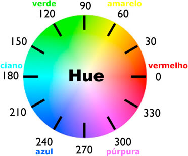

Os navegadores possuem cores pre-definidas com nomes, exemplo:
RGB
O Valor de cor quando setado atraves do RGB passamos uma cadeia de 3 numeros precedidos de #, e seu valor varia de 0 a 255, ou de 0 a 100% que representa quanto de cada cor será adiconada.
O RGB significa: R(red), G(green), B(blue):
A representação fica da seguinte forma:
rgb(0,1,2) | essa cor por sinal é um tom de preto.
*O que está como 0 representa a cor vermelha e significa não tem nada de vermelho aplicado nessa cor.
*O que está como 1 representa a cor verde e significa tem apenas 1 de verde nessa cor.
*O que está como 2 representa a cor Azul e significa tem apenas 2 de verde nessa cor.
a mistura desses 3 campos resultam em uma nova cor.
RGBA
o RGBA funciona da mesma forma que o RGB, a unica diferença é que no RGBA definimos o Alphas representado pelo A.
O Alphas é o responsavel pela ttransparencia da cor, seu valor varia de 0.0 a 1.0, onde 0.0 é 0%, e 1.0 é 100% de transparencia.
A representação fica da seguinte forma:
rgb(0,1,2,0.5)
Na representação hexadecimal o numero é formado por 6 digitos, onde os 2 primeiros representam o vermelho, os 2 do meio o verde e os 2 ultimos o azul.
o seu valor varia de 0 a 15, porem quando chegamos no 10 ele passa a ser representado por letras. sendo assim o valor pode assuimir de 0 a F:
HSL
O HSL é formado por 3 campos assim como o RGB, porem seu conceito é diferente, o hsl significa Hue, Saturation, lightness, ou em português, Matiz, saturação e luminosidade.

na imagem acima temos os valores que a matriz pode assumir e que vai no primeiro campo.
no segundo campo preenchemos com a saturação que vai de 0 a 100%
no luminosidade também vai de 0 a 100%
sua representação fica:
hsl(185, 100%, 85%)
HSLA
Assim como no RGB o A no HSLA significa o alphas e seu valor pode assumir de 0 a 100%.
o object-fit vai determinar como uma imagem ou video será dimensionado para caber dentro do conteiner.
Cada valor assume uma formatação diferente.
object-fit: fill;
object-fit: contain
object-fit: cover
object-fit: none
object-fit: Scale-down
O Obeject position é muito usanda em conjunto com a object-fit. assim como o Object fit define a dimensão o object position define a posição do video ou imagem.
object-fit: cover
object-position:50px 90px;
com o CSS podemos alterar o o fundo do conteiner com uma imagem, porem devemos usar os comandos de dimensionamento para ajustar.
o condigo para setar a imagem pelo CSS é:
background-image: url('../imagens/paisagem-florestal_71767-127.avif');
Note que usamos um auxiliar URL e dento dele Começamos com ../ para poder definir o caminho que a imagem estava salva.
background-image: url('../imagens/paisagem-florestal_71767-127.avif');
o proximo que irmemos usar é o linear gradiente ele funciona similar ao URL, porem em vez de passarmos o caminho da imagem passamos cores como parametros.
background-image: linear-gradient(aqua, violet, blue);
o proximo que irmemos usar é o radial gradiente ele funciona similar a linear gradiente, porem em vez de formar linhas ela forma circulos em degrade.
background-image: radial-gradient(aqua, violet, blue);
o proximo é o repeat linear, ele monta ums seguencia repetida de listas onde é muito usa em listas.
podemos usar various outros efeitos no link abaixo:
Verou
background-image: repeating-linear-gradient(to bottom,lightblue 0 20px, aqua 20px 40px, blue 40px 60px);
Assim como nos exemplos anteriores também temos a forma radial do repeat.
background-image: repeating-radial-gradient( blue 0 5px, lightblue 5px 10px, aqua 10px 15px);
background-size: auto;
background-size: cover;
background-size: contain;
background-size: 50%; | ou | background-size: 200px;
background-size: 200px 250px;
background-image: url(../imagens/leaves-5949884_1280.png),url(../imagens/paisagem-florestal_71767-127.avif);
background-size: 100px , cover;
o background repeat serve para repetir uma imagem uma determinada quantidade de vezes.
Esse codigo faz apenas que se repita no eixo X, por mais que tenha espaço no eixo Y ele não rpetirá nesse eixo.
background-repeat: repeat-x;
O mesmo serve para o repeat y, que faz a mesma coisa do codigo anterior porem apenas no eixo y
background-repeat: repeat-y;
O background repeat space faz a separação da imagem com space para manter as imagens intactas por mais que isso gere espaços o fundo
background-repeat: space;
O background repeat round faz a prepetição da imagem porem ele faz o redimensionamento da imagem para não haver nem espaços nem cortes.
background-repeat: round;
ele faz que a imagem seja setado apenas uma vez por mais que tenha espaço será setado apenas uma vez.
background-repeat: no-repeat;
background-position: bottom;
background-position: top;
background-position: left;
background-position: right;
background-position: center;
background-position: X - Y;
background-position: left bottom;
background-position: left 35%;
background-position: left 25% bottom 15%;